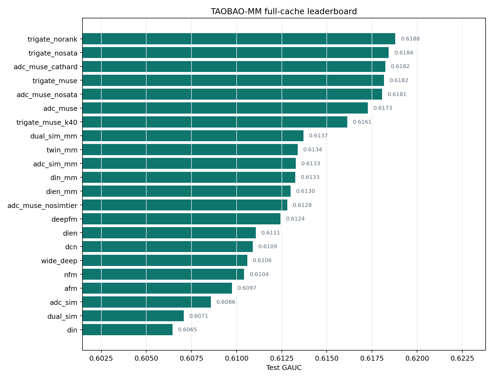
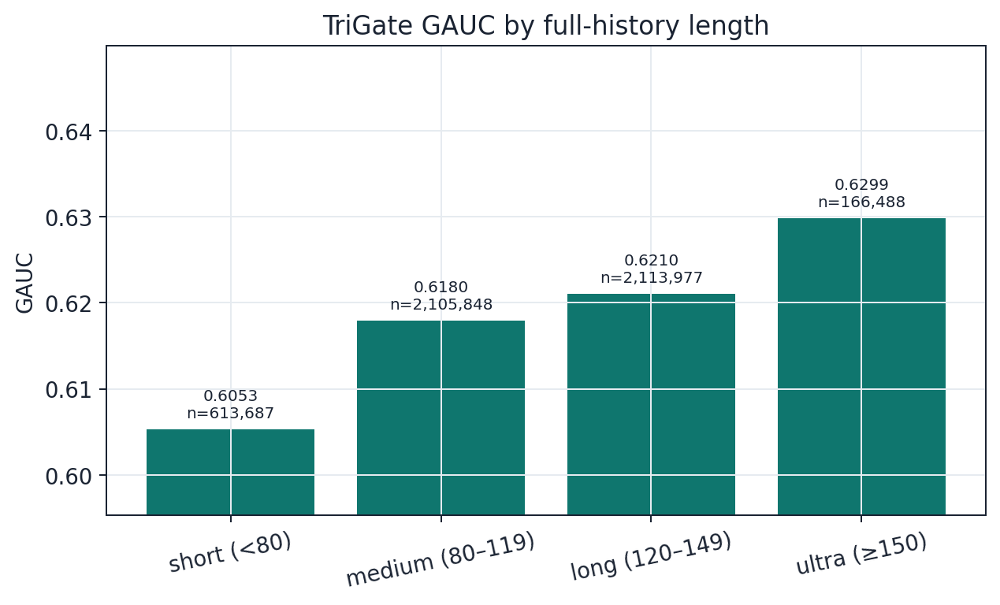

06 · 个人项目 / 独立完成 · 公开数据离线实验
基于多路检索与多模态融合的超长序列 CTR 预估
场景上是工业 CTR 长序列精排；能力上可抽象为大规模训练管线、粗检索 + 精建模、门控融合、多模态特征与完整消融评测，服务推荐广告、机器学习与数据挖掘岗位。
- Test GAUC
- 0.6188
- 相对 DIN+MM
- +0.55pp
- 训练 / 测试规模
- 约 2450 万 / 500 万
项目背景｜超长行为序列下，均值池化与固定窗口都不够
特征交叉模型常把历史行为压成 mean pooling；DIN 能按候选商品做 target-aware attention，但历史继续变长后，无关行为会稀释兴趣并抬高计算成本。项目基于淘宝工业 CTR 公开数据 TAOBAO-MM 的部分 shard，构建约 2450 万训练 / 50 万验证 / 500 万测试样本的离线评测管线，历史最大长度 160，默认检索宽度 $K=80$。
这不是公司线上系统，也不是官方 76M/23M 全量协议复现。目标是在可核验的统一协议下，把“如何从超长历史中保留短期兴趣，同时补充跨时间相关行为”讲清楚。
项目目标｜建立可迁移的长序列深度排序能力闭环
项目目标分三层：
- 场景层：提升 CTR 排序，主指标用 GAUC，同时报告 AUC、LogLoss、ECE；
- 方法层：从特征交叉与 DIN/DIEN 基线，演进到 GSU 粗检索 + ESU 精建模，再到三路门控融合；
- 能力层：沉淀可迁移到搜广推与通用 ML 岗位的能力——大规模数据管线、检索与融合、多模态、消融/校准/切片与训练工程。
技术路径｜基线 → 长序列检索 → 三路门控 → 工程闭环
1. 建立完整基线。 复现 Wide&Deep、DeepFM、DCN、DIN/DIEN、SIM/TWIN-lite 等共 22 组基线与消融。DIN 对历史做 target-aware attention：
$$ \mathbf{u}_{\mathrm{DIN}}=\sum_t \alpha_t(\mathbf{e}_t,\mathbf{e}_{\mathrm{target}})\mathbf{e}_t $$
DIN+MM 将 GAUC 提升到 0.6133，但仍暴露出固定窗口内“继续加复杂兴趣演化收益有限、瓶颈在超长历史检索”的问题。
2. 粗检索 + 精建模。 采用 SIM 两阶段：GSU 从长历史召回 top-k，ESU 再做精细建模。近因通道必须保留，检索只做增量补充。进一步设计门控残差：
$$ \mathbf{h}_{\mathrm{fused}}=\mathbf{h}_{\mathrm{rec}}+g\cdot\mathbf{h}_{\mathrm{ret}} $$
近因系数恒为 1；检索质量差时 $g$ 接近 0，避免噪声污染。
3. 多模态与三路门控。 商品表征同时使用可训练 item ID、类目 embedding 与冻结 SCL 多模态向量。SimTier 把历史相对目标的多模态相似度做成分布特征；TriGate-MUSE 对 recent、MM soft GSU、category hard GSU 三路兴趣做 Softmax 门控：
$$ \mathbf{h}_{\mathrm{fused}}=w_{\mathrm{rec}}\mathbf{h}_{\mathrm{rec}}+w_{\mathrm{mm}}\mathbf{h}_{\mathrm{mm}}+w_{\mathrm{cat}}\mathbf{h}_{\mathrm{cat}} $$

4. 大规模训练工程。 用 compact 词表与频次截断处理百万级 item embedding；用 streaming memmap 规避全量样本驻留内存；embedding / dense 双学习率；按 val AUC 早停，避免第二轮过拟合。

项目结果｜离线增益可核验，能力可泛化表述
最佳无 ranking-loss 变体在 500 万测试样本上取得 AUC 0.6201、GAUC 0.6188、ECE 0.0063，相对 DIN+MM 的 GAUC 提升约 0.55pp。去掉 SimTier 后 GAUC 降至 0.6128（约 -0.45pp），说明相似度分布特征比单纯在 attention logit 上叠加 cosine 更关键。


面试表达建议：投推荐/广告岗时强调 GSU/ESU、GAUC 与三路门控；投通用机器学习岗时强调 22 组消融、校准、切片评测与千万级训练工程。不要宣称官方全量 SOTA、线上 A/B，或“多模态已显著解决冷启动”。